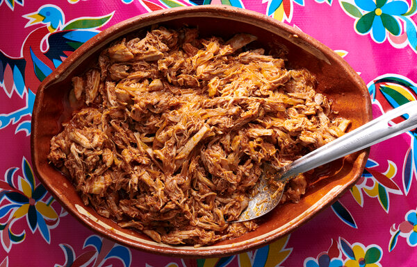

Home
Good chicken

Description:
This recipe is inspired by Mexican red chicken. It is good, good chicken.
Ingredients:
- 4 large boneless skinless chicken breasts
- 1 large onion
- 2 bell peppers
- 1 serrano pepper
- 1 jalapeno pepper
- 4 tablespoons cumin
- 2 bay leaves
- Salt and pepper to taste
- 3 tablespoons minced garlic
- 1 can tomato puree
- 4 tablespoons hot sauce
- 1 quart water
Steps:
- Chop up all produce
- In an oiled deep pot, cook the onions until translucent.
- Add all peppers, and continue to cook untin peppers soften.
- Add garlic, cumin, salt, and pepper and continue to simmer.
- Once everything is nice and soft, add tomato puree and hot sauce.
- Add chicken breast on top of the vegetables, and cover with water.
- Once water comes to a simmer, leave pot uncovered and cook low and slow untin chicken is tender.
- As the chicken softens, you will be able to shred it easily in the pot.
- continue to simmer until most of the water has evaporated out.
- Once done serve with rice, tortillas, or flatbread.